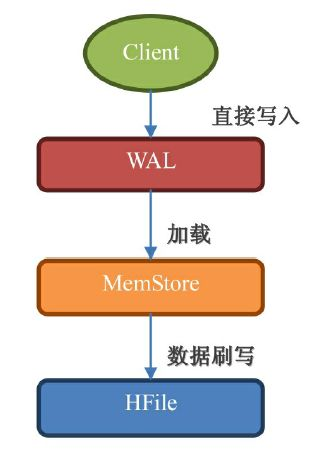

大数据 008hbase基础知识
一、数据模型
1、重要概念回顾
-
Namespace（表命名空间）：将多个表分到一个组进行统一管理。
-
Table（表）：一个表由一个或者多个列族组成；数据属性比如：超时时间（TTL），压缩算法（COMPRESSION）等，都在列族的定义中定义；定义完列族后表是空的，只有添加了行，表才有数据。
-
Row（行）：一个行包含了多个列，这些列通过列族来分类；行中的数据所属列族只能从该表所定义的列族中选取；由于 HBase 是一个列式数据库，所以一个行中的数据可以分布在不同的服务器上。
-
Column Family（列族）：列族是多个列的集合，HBase 会尽量把同一个列族的列放到同一个服务器上，这样可以提高存取性能，并且可以批量管理有关联的一堆列；所有的数据属性都是定义在列族上；在 HBase 中，建表定义的不是列，而是列族。
-
Column Qualifier（列）：多个列组成一个行，列族和列经常用 Column Family: Column Qualifier 来一起表示，列是可以随意定义的，一个行中的列不限名字、不限数量。
-
Cell（单元格）：一个列中可以存储多个版本的数据，而每个版本就称为一个单元格（Cell），所以在 HBase 中的单元格跟传统关系型数据库的单元格概念不一样；HBase 中的数据细粒度比传统数据结构更细一级，同一个位置的数据还细分成多个版本。
-
Timestamp（时间戳/版本号）：既可以把它称为是时间戳，也可以称为是版本号，因为它是用来标定同一个列中多个单元格的版本号的。不指定版本号的时候，系统会自动采用当前的时间戳来作为版本号；当手动定义了一个数字来当作版本号的时候，这个 Timestamp 就真的是只有版本号的意义了。
2、几个小问题
HBase是否支持表关联？
官方给出的答案是干脆的，那就是“不支持”。如果想实现数据之间的关联，就必须自己去实现了，这是挑选 NoSQL 数据库必须付出的代价。
HBase 是否支持 ACID？
ACID 就是 Atomicity（原子性）、Consistency（一致性）、Isolation（隔离性）、Durability（持久性）的首字母缩写，ACID 是事务正确执行的保证，HBase 部分支持 了 ACID。
表命名空间有什么用？
表命名空间主要是用来对表分组，那么对表分组有什么用？命名空间可以填补 HBase 无法在一个实例上分库的缺憾，通过命名空间我们可以像关系型数据库一样将表分组，对于不同的组进行不同的环境设定，比如配额管理、安全管理等。
HBase 中有两个保留表空间是预先定义好的：
- hbase：系统表空间，用于组织 HBase 内部表；
- default：那些没有定义表空间的表都被自动分配到这个表空间下。
二、HBase 的存储数据方式
1、架构回顾
一个 HBase 集群由一个 Master（也可以把两个 Master 做成 HighAvailable）和多个 RegionServer 组成。
-
Master：负责启动的时候分配 Region 到具体的 RegionServer，执行各种管理操作，比如 Region 的分割和合并。HBase 中的 Master 的角色功能比其他类型集群弱很多，HBase 的 Master 很特别，因为数据的读取和写入都跟它没什么关系，它挂了业务系统照样运行。当然 Master 也不能宕机太久，有很多必要的操作，比如创建表、修改列族配置，以及更重要的分割和合并都需要它的操作。
-
RegionServer：RegionServer 上有一个或者多个 Region，我们读写的数据就存储在 Region 上。如果你的 HBase 是基于 HDFS 的（单机 HBase 可基于本地磁盘），那么 Region 所有数据存取操作都是调用了 HDFS 的客户端接口来实现的。
-
Region：表的一部分数据，HBase 是一个会自动分片的数据库，一个 Region 就相当于关系型数据库中分区表的一个分区，或者 MongoDB 的一个分片。
-
HDFS：HBase 并不直接跟服务器的硬盘交互，而是跟 HDFS 交互，所以 HDFS 是真正承载数据的载体。
-
ZooKeeper：ZooKeeper 在 HBase 中的比 Master 更重要，把 Master 关掉业务系统照样跑，能读能写；但是把 ZooKeeper 关掉，就不能读取数据了，因为读取数据所需要的元数据表 hbase:meata 的位置存储在 ZooKeeper 上。
HBase 的宏观架构
2、RegionServer 内部架构
一个 RegionServer 包含有：
-
一个 WAL：预写日志，WAL 是 Write-Ahead Log 的缩写，就是：预先写入。当操作到达 Region 的时候，HBase 先把操作写到 WAL 里面去，HBase 会把数据放到基于内存实现的 Memstore 里，等数据达到一定的数量时才刷写（flush）到最终存储的 HFile 内，而如果在这个过程中服务器宕机或者断电了，那么数据就丢失了。WAL 是一个保险机制，数据在写到 Memstore 之前，先被写到 WAL 了，这样当故障恢复的时候依旧可以从 WAL 中恢复数据。
-
多个 Region：Region 相当于一个数据分片，每一个 Region 都有起始 rowkey 和结束 rowkey，代表了它所存储的 row 范围。
RegionServer 内部架构
3、Region 内部架构
每一个 Region 内都包含有多个 Store 实例，一个 Store 对应一个列族的数据，如果一个表有两个列族，那么在一个 Region 里面就有两个 Store，Store 内部有 MemStore 和 HFile 这两个组成部分。
Region 内部架构
4、预写日志（WAL）
预写日志（Write-ahead log，WAL）就是设计来解决宕机之后的操作恢复问题的，数据到达 Region 的时候是先写入 WAL，然后再被加载到 Memstore，就算 Region 的机器宕掉了，由于 WAL 的数据是存储在 HDFS 上的，所以数据并不会丢失。
WAL 是默认开启的，可以通过下面的代码关闭 WAL。
|
|
Put、Append、Increment、Delete 都是 Mutation 的子类，所以他们都有 setDurability 方法，这样可以让该数据操作快一点，但是最好不要这样做，因为当服务器宕机时，数据就会丢失。
如果你实在想不惜通过关闭 WAL 来提高性能，可以选择异步写入 WAL。
|
|
这样设定后 Region 会等到条件满足的时候才把操作写入 WAL，这里提到的条件主要指的是时间间隔 hbase.regionserver.optionallogflushinterval，这个时间间隔的意思是 HBase 间隔多久会把操作从内存写入 WAL，默认值是 1s。
如果你的系统对性能要求极高、对数据一致性要求不高，并且系统的性能瓶颈出现在 WAL 上的时候，你可以考虑使用异步写入 WAL，否则，使用默认的配置即可。
5、WAL 滚动
WAL 是一个环状的滚动日志结构，因为这种结构写入效果最高，而且可以保证空间不会持续变大。
WAL 的检查间隔由 hbase.regionserver.logroll.period 定义，默认值为 1h。检查的内容是把当前 WAL 中的操作跟实际持久化到 HDFS 上的操作比较，看哪些操作已经被持久化了，被持久化的操作就会被移动到 .oldlogs 文件夹内（这个文件夹也是在 HDFS 上的）。
一个 WAL 实例包含有多个 WAL 文件，WAL 文件的最大数量通过 hbase.regionserver.maxlogs（默认是 32）参数来定义。
其他的触发滚动的条件是：
-
当 WAL 文件所在的块（Block）快要满了；
-
当WAL所占的空间大于或者等于某个阀值，该阀值的计算公式是：
hbase.regionserver.hlog.blocksize * hbase.regionserver.logroll.multiplier； -
hbase.regionserver.hlog.blocksize是标定存储系统的块（Block）大小的，你如果是基于 HDFS 的，那么只需要把这个值设定成 HDFS 的块大小即可； -
hbase.regionserver.logroll.multiplier是一个百分比，默认设定成 0.95，意思是 95%，如果 WAL 文件所占的空间大于或者等于 95% 的块大小，则这个 WAL 文件就会被归档到 .oldlogs 文件夹内。
WAL 文件被创建出来后会放在 /hbase/.log 下（这里说的路径都是基于 HDFS），一旦 WAL 文件被判定为要归档，则会被移动到 /hbase/.oldlogs 文件夹。Master 会负责定期地去清理 .oldlogs 文件夹，判断的条件是“没有任何引用指向这个 WAL 文件”。
目前有两种服务可能会引用 WAL 文件：
-
TTL 进程：该进程会保证 WAL 文件一直存活直到达到 hbase.master.logcleaner.ttl 定义的超时时间（默认 10 分钟）为止；
-
备份（replication）机制：如果开启了 HBase 的备份机制，那么 HBase 要保证备份集群已经完全不需要这个 WAL 文件了，才会删除这个 WAL 文件。这里提到的 replication 不是文件的备份数，而是 0.90 版本加入的特性，这个特性用于把一个集群的数据实时备份到另外一个集群。
6、Store 内部结构
在 Store 中有两个重要组成部分：
-
MemStore：每个 Store 中有一个 MemStore 实例，数据写入 WAL 之后就会被放入 MemStore。MemStore 是内存的存储对象，只有当 MemStore 满了的时候才会将数据刷写（flush）到 HFile 中；
-
HFile：在 Store 中有多个 HFile，当 MemStore 满了之后 HBase 就会在 HDFS 上生成一个新的 HFile，然后把 MemStore 中的内容写到这个 HFile 中。HFile 直接跟 HDFS 打交道，它是数据的存储实体。
Store 内部结构
WAL 是存储在 HDFS 上的，Memstore 是存储在内存中的，HFile 又是存储在 HDFS 上的；数据是先写入 WAL，再被放入 Memstore，最后被持久化到 HFile 中。数据在进入 HFile 之前已经被存储到 HDFS 一次了，为什么还需要被放入 Memstore？
这是因为 HDFS 上的文件只能创建、追加、删除，但是不能修改。对于一个数据库来说，按顺序地存放数据是非常重要的，这是性能的保障，所以我们不能按照数据到来的顺序来写入硬盘。
可以使用内存先把数据整理成顺序存放，然后再一起写入硬盘，这就是 Memstore 存在的意义。虽然 Memstore 是存储在内存中的，HFile 和 WAL 是存储在 HDFS 上的，但由于数据在写入 Memstore 之前，要先被写入 WAL，所以增加 Memstore 的大小并不能加速写入速度。Memstore 存在的意义是维持数据按照 rowkey 顺序排列，而不是做一个缓存。
7、MemStore
设计 MemStore 的原因有以下几点：
-
由于 HDFS 上的文件不可修改，为了让数据顺序存储从而提高读取效率，HBase 使用了 LSM 树结构来存储数据，数据会先在 Memstore 中整理成 LSM 树，最后再刷写到 HFile 上。
-
优化数据的存储，比如一个数据添加后就马上删除了，这样在刷写的时候就可以直接不把这个数据写到 HDFS 上。
不过不要想当然地认为读取也是先读取 Memstore 再读取磁盘哟！读取的时候是有专门的缓存叫 BlockCache，这个 BlockCache 如果开启了，就是先读 BlockCache，读不到才是读 HFile+Memstore。
8、HFile（StoreFile）
HFile 是数据存储的实际载体，我们创建的所有表、列等数据都存储在 HFile 里面。HFile 是由一个一个的块组成的，在 HBase 中一个块的大小默认为 64KB，由列族上的 BLOCKSIZE 属性定义。这些块区分了不同的角色：
-
Data：数据块。每个 HFile 有多个 Data 块，我们存储在 HBase 表中的数据就在这里，Data 块其实是可选的，但是几乎很难看到不包含 Data 块的 HFile；
-
Meta：元数据块。Meta 块是可选的，Meta 块只有在文件关闭的时候才会写入。Meta 块存储了该 HFile 文件的元数据信息，在 v2 之前布隆过滤器（Bloom Filter）的信息直接放在 Meta 里面存储，v2 之后分离出来单独存储；
-
FileInfo：文件信息，其实也是一种数据存储块。FileInfo 是 HFile 的必要组成部分，是必选的，它只有在文件关闭的时候写入，存储的是这个文件的信息，比如最后一个 Key（LastKey），平均的 Key 长度（AvgKeyLen）等；
-
DataIndex：存储 Data 块索引信息的块文件。索引的信息其实也就是 Data 块的偏移值（offset），DataIndex 也是可选的，有 Data 块才有 DataIndex；
-
MetaIndex：存储 Meta 块索引信息的块文件。MetaIndex 块也是可选的，有 Meta 块才有 MetaIndex；
-
Trailer：必选的，它存储了 FileInfo、DataIndex、MetaIndex 块的偏移值。
HFile 组成结构
其实叫 HFile 或者 StoreFile 都没错，在物理存储上我们管 MemStore 刷写而成的文件叫 HFile，StoreFile 就是 HFile 的抽象类而已。
9、Data 数据块
Data 数据块的第一位存储的是块的类型，后面存储的是多个 KeyValue 键值对，也就是单元格（Cell）的实现类，Cell 是一个接口，KeyValue 是它的实现类。
Data 数据块结构
10、KeyValue 类
一个 KeyValue 类里面最后一个部分是存储数据的 Value，而前面的部分都是存储跟该单元格相关的元数据信息。如果你存储的 value 很小，那么这个单元格的绝大部分空间就都是 rowkey、column family、column 等的元数据，所以大家的列族和列的名字如果很长，大部分的空间就都被拿来存储这些数据了。
不过如果采用适当的压缩算法就可以极大地节省存储列族、列等信息的空间了，所以在实际的使用中，可以通过指定压缩算法来压缩这些元数据。不过压缩和解压必然带来性能损耗，所以使用压缩也需要根据实际情况来取舍。如果你的数据主要是归档数据，不太要求读写性能，那么压缩算法就比较适合你。
KeyValue 结构
三、增删查改的真正面目
HBase 是一个可以随机读写的数据库，而它所基于的持久化层 HDFS 却是要么新增，要么整个删除，不能修改的系统。那 HBase 怎么实现我们的增删查改的？真实的情况是这样的：HBase 几乎总是在做新增操作。
-
当你新增一个单元格的时候，HBase 在 HDFS 上新增一条数据；
-
当你修改一个单元格的时候，HBase 在 HDFS 又新增一条数据，只是版本号比之前那个大（或者你自己定义）；
-
当你删除一个单元格的时候，HBase 还是新增一条数据！只是这条数据没有 value，类型为 DELETE，这条数据叫墓碑标记（Tombstone）。
由于数据库在使用过程中积累了很多增删查改操作，数据的连续性和顺序性必然会被破坏。为了提升性能，HBase 每间隔一段时间都会进行一次合并（Compaction），合并的对象为 HFile 文件。
合并分为 minor compaction 和 major compaction，在 HBase 进行 major compaction 的时候，它会把多个 HFile 合并成 1 个 HFile，在这个过程中，一旦检测到有被打上墓碑标记的记录，在合并的过程中就忽略这条记录，这样在新产生的 HFile 中，就没有这条记录了，自然也就相当于被真正地删除了。
四、HBase 数据结构总结
HBase 数据的内部结构大体如下：
-
一个 RegionServer 包含多个 Region，划分规则是：一个表的一段键值在一个 RegionServer 上会产生一个 Region。不过当某一行的数据量太大了（要非常大），HBase 也会把这个 Region 根据列族切分到不同的机器上去；
-
一个 Region 包含多个 Store，划分规则是：一个列族分为一个 Store，如果一个表只有一个列族，那么这个表在这个机器上的每一个 Region 里面都只有一个 Store；
-
一个 Store 里面只有一个 Memstore；
-
一个 Store 里面有多个 HFile，每次 Memstore 的刷写（flush）就产生一个新的 HFile 出来。
数据单元层次图
五、KeyValue 的写入和读出
1、写入
一个 KeyValue 被持久化到 HDFS 的过程的如下：
 KeyValue 写入过程
-
WAL：数据被发出之后第一时间被写入 WAL，由于 WAL 是基于 HDFS 来实现的，所以也可以说现在单元格就已经被持久化了，但是 WAL 只是一个暂存的日志，它是不区分 Store 的，这些数据是不能被直接读取和使用；
-
Memstore：数据随后会立即被放入 Memstore 中进行整理，Memstore 会负责按照 LSM 树的结构来存放数据，这个过程就像我们在打牌的时候，抓牌之后在手上对牌进行整理的过程；
-
HFile：最后，当 Memstore 太大了达到尺寸上的阀值，或者达到了刷写时间间隔阀值的时候，HBaes 会把这个 Memstore 的内容刷写到 HDFS 系统上，称为一个存储在硬盘上的 HFile 文件。至此，我们可以称为数据真正地被持久化到硬盘上，就算宕机，断电，数据也不会丢失了。
2、读出
由于有 MemStore（基于内存）和 HFile（基于HDFS）这两个机制，你一定会立马想到先读取 MemStore，如果找不到，再去 HFile 中查询。这是显而易见的机制，可惜 HBase 在处理读取的时候并不是这样的。实际的读取顺序是先从 BlockCache 中找数据，找不到了再去 Memstore 和 HFile 中查询数据。
墓碑标记和数据不在一个地方，读取数据的时候怎么知道这个数据要删除呢？如果这个数据比它的墓碑标记更早被读到，那在这个时间点真是不知道这个数据会被删 除，只有当扫描器接着往下读，读到墓碑标记的时候才知道这个数据是被标记为删除的，不需要返回给用户。
所以 HBase 的 Scan 操作在取到所需要的所有行键对应的信息之后还会继续扫描下去，直到被扫描的数据大于给出的限定条件为止，这样它才能知道哪些数据应该被返回给用户，而哪些应该被舍弃。所以你增加过滤条件也无法减少 Scan 遍历的行数，只有缩小 STARTROW 和 ENDROW 之间的行键范围才可以明显地加快扫描的速度。
在 Scan 扫描的时候 store 会创建 StoreScanner 实例，StoreScanner 会把 MemStore 和 HFile 结合起来扫描，所以具体从 MemStore 还是 HFile 中读取数据，外部的调用者都不需要知道具体的细节。当 StoreScanner 打开的时候，会先定位到起始行键（STARTROW）上，然后开始往下扫描。
StoreScanne 扫描数据
其中红色块部分都是属于指定 row 的数据，Scan 要把所有符合条件的 StoreScanner 都扫描过一遍之后才会返回数据给用户。
六、Region 的定位
Region 的查找，早期的设计（0.96.0）之前是被称为三层查询架构：
三层查询架构:
-
Region：查找的数据所在的 Region；
-
.META.：是一张元数据表，它存储了所有 Region 的简要信息，
.META.表中的一行记录就是一个 Region，该行记录了该 Region 的起始行、结束行和该 Region 的连接信息，这样客户端就可以通过这个来判断需要的数据在哪个 Region 上； -
-ROOT-：是一张存储
.META.表的表，.META.可以有很多张，而-ROOT-就是存储了.META.表在什么 Region 上的信息（.META. 表也是一张普通的表，也在 Region 上）。通过两层的扩展最多可以支持约 171 亿个 Region。
-ROOT- 表记录在 ZooKeeper 上，路径为：/hbase/root-region-server；
Client 查找数据的流程从宏观角度来看是这样的：
- 用户通过查找 zk（ZooKeeper）的
/hbase/root-regionserver节点来知道-ROOT-表在什么 RegionServer 上； - 访问
-ROOT-表，看需要的数据在哪个.META.表上，这个.META.表在什么 RegionServer 上； - 访问
.META.表来看要查询的行键在什么 Region 范围里面； - 连接具体的数据所在的 RegionServer，这回就真的开始用 Scan 来遍历 row 了。
早期版本 Region 查找过程
从 0.96 版本之后这个三层查询架构被改成了二层查询架构，-ROOT- 表被去掉了，同时 zk 中的 /hbase/root-region-server 也被去掉了，直接把 .META. 表所在的 RegionServer 信息存储到了 zk 中的 /hbase/meta-region-server。再后来引入了 namespace，.META. 表被修改成了 hbase:meta。
新版 Region 查找流程：
- 客户端先通过 ZooKeeper 的
/hbase/meta-region-server节点查询到哪台 RegionServer 上有hbase:meta表。 - 客户端连接含有
hbase:meta表的 RegionServer，hbase:meta表存储了所有 Region 的行键范围信息，通过这个表就可以查询出要存取的 rowkey 属于哪个 Region 的范围里面，以及这个 Region 又是属于哪个 RegionServer； - 获取这些信息后，客户端就可以直连其中一台拥有要存取的 rowkey 的 RegionServer，并直接对其操作；
- 客户端会把
meta信息缓存起来，下次操作就不需要进行以上加载hbase:meta的步骤了。